In this section, we play around with an existing diffusion model called DeepFloyd. We generate embeddings for several prompts for later use (['a high quality picture', 'an oil painting of a snowy mountain village', 'an oil painting of people around a campfire', 'an oil painting of an old man', 'a high quality photo', 'an oil painting of a wolf', 'an oil painting of a sheep', 'an oil painting of a castle', 'an oil painting of the beach', 'an oil painting of a samurai', 'a dinosaur eating a khinkali', 'a dolphin shooting a machine gun', 'confucius playing minecraft', 'an oil painting of the sunset', 'an oil painting of an alpine lake', 'an oil painting of a bustling market', 'an oil painting of a dwarf', '']).
Using seed = 100, here are the results for a few of our prompts using 20 inference steps:
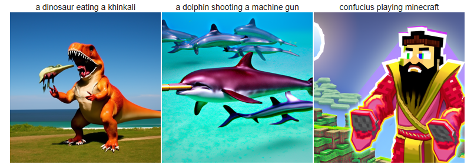
and two inference steps (notice how fewer inference steps lead to relatively worse generations):
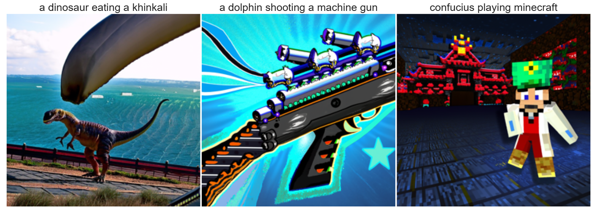
Now then, what is diffusion? Diffusion is the process of generating images from noise, i.e. it is the reverse of progressively adding more noise to an image. Before we explore the backward process (diffusion), let's see what the forward process looks like.
To add noise to an image, rather than iteratively adding noice one time-step at a time, we can use alpha coefficients (in this case already chosen by DeepFloyd researchers) which correspond to time steps in the iterative noising process.
Then, given a clean image x0, we get a noisy image xt at timestep t by sampling from a Gaussian with mean sqrt(alpha_t), variance (1 - alpha_t) i.e. xt = sqrt(alpha_t)*x0 + (1-alpha_t)*e, where e ~ N(0, 1).
Noising the Campanile at timesteps 250, 500, and 750 respectively looks like this:
The classical way to denoise an image is by Gaussian blurring. However, this doesn't work too well if we have too much noise:
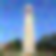
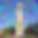
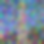
Instead, let's use a DeepFloyd stage to denoise the image back to the image manifold. Essentially, the DeepFloyd UNet predicts where the noise is, then we plug the noise into our forward process equation and solve for the clean image. Here are the results for the same noise levels (250, 500, 750).
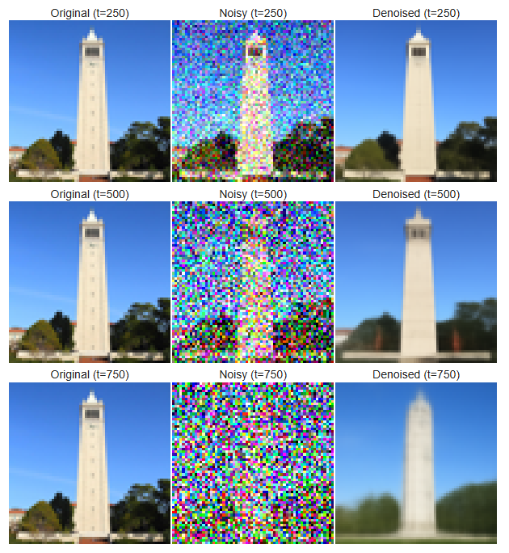
Instead of using this noise from relatively far apart times, a better approach would be to iteratively remove the noise between smaller timesteps.
In this example, we use step size = 30 and our strided timesteps go from t = 990 (noisy) back to 0 i.e. if i = 10, time = 990 - (i * 30) = 690.
Let's try starting from i = 10 (t = 690) and gradually denoising from that time value. For the intermediate visualizations, t = 690, 540, 390, 240 and 90 using the same equation as how we got t = 690 from i = 10.
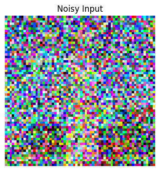
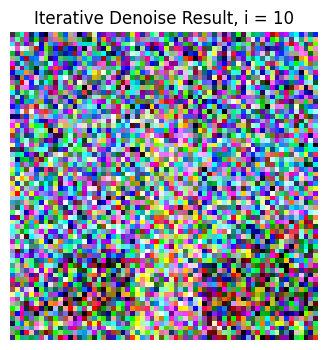
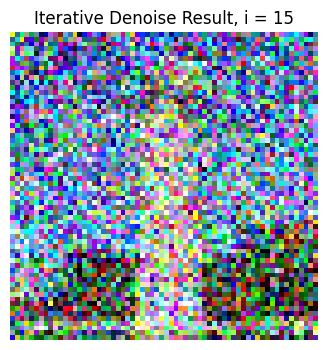
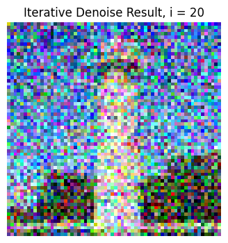
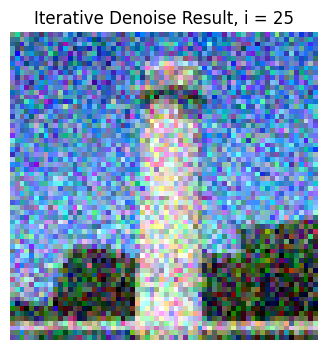
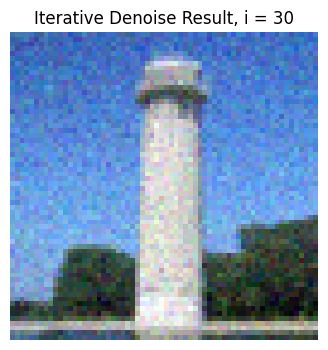
Here is the result compared to one-step denoising and Gaussian blurring, respectively:
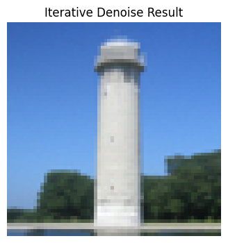
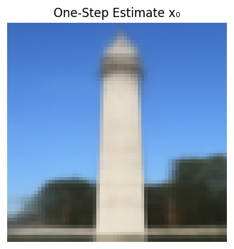
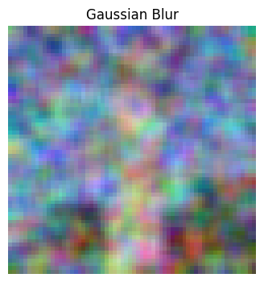
In addition to iteratively denoising a noised image, we can also iteratively denoise pure noise using DeepFloyd!
Simply condition the model by asking it to generate a "high quality image" -- we can do this to get some idea of what DeepFloyd thinks the image manifold looks like.
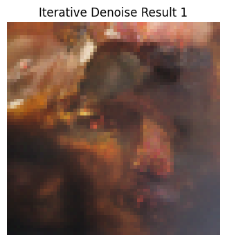
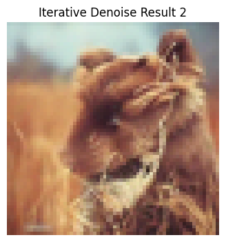
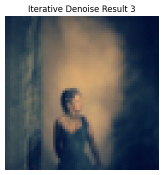
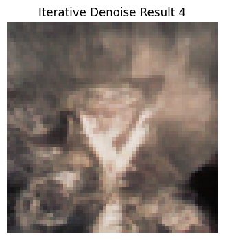
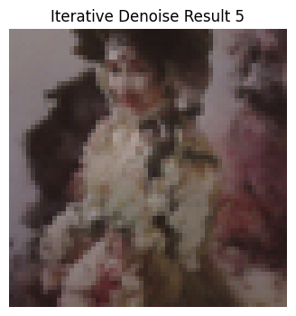
Notice that these images look a bit strange. Researchers have discovered that classifier-free guidance achieves better results than simply conditioning the model. How does CFG work? We compute both a conditional noise estimate based on our prompt, and also an unconditional noise estimate (i.e. based on the empty prompt), then compute e = e_u + gamma*(e_c - e_u) for some hyperparameter gamma representing our guidance variable (we use 5.0)
Here are some results from iterative denoising using CFG (notice how the generated images look much more like real photos):
We can also condition the model on a general prompt like "a high quality photo" and input a noised image like our Campanile image -- at decreased noise levels, we will see the iteratively denoised result looking gradually more like the original clean image. The numbers below refer to starting index in steps (i), i.e. higher numbers corresponds to more denoised versions of Campanile as inputs.
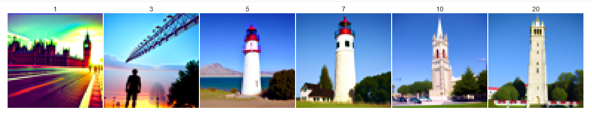
Similarly for this image of a Labubu we can do the same process:
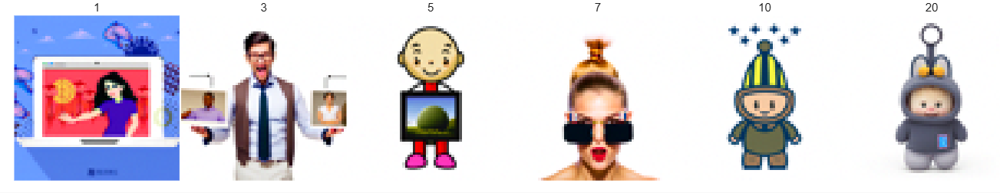
We can also repeat this process on hand-drawn images:
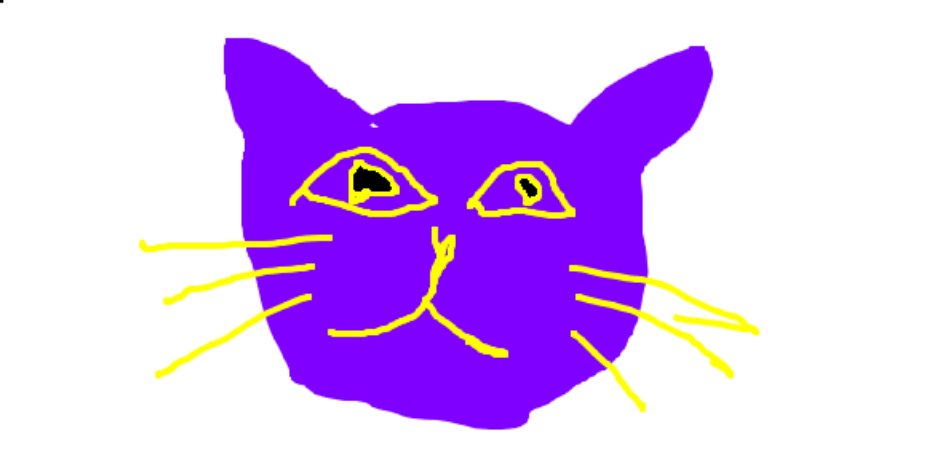
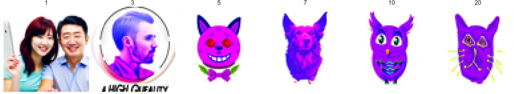
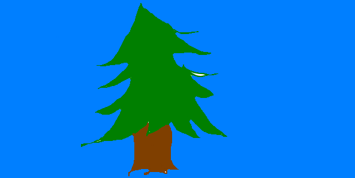
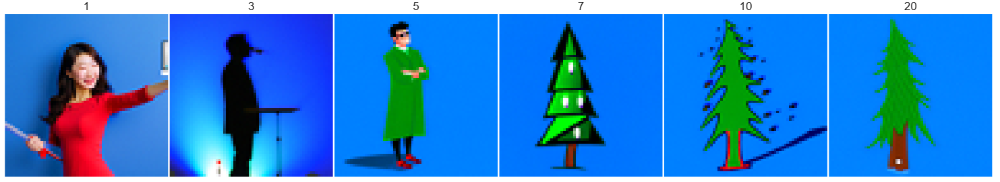
Additionally, we can try inpainting images -- we want to apply masks to images s.t. new content is generated wherever m = 1.
We use the same denoising loop, but after every step, we force xt to have the same pixels as the original image where m=0.
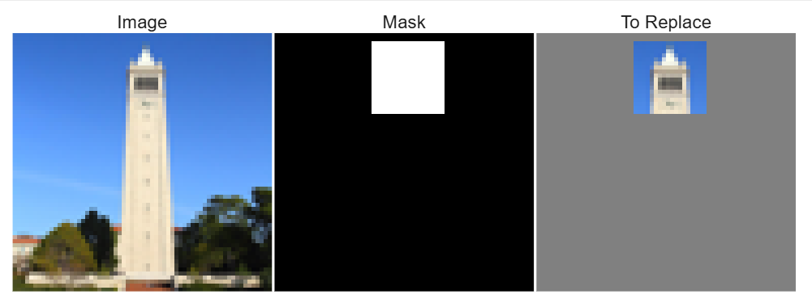
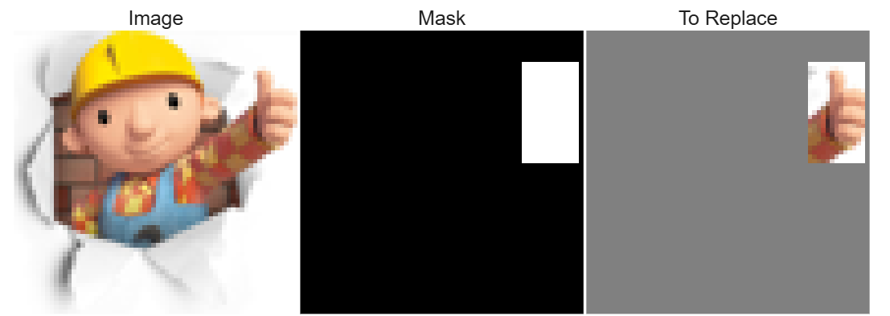
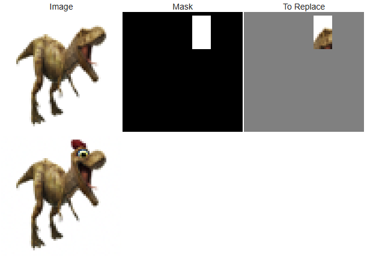
Finally, we can try text-conditioning a noised image on a prompt for a different image to get these interesting results:
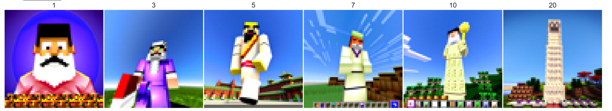
Campanile conditioned on "confucius playing minecraft"
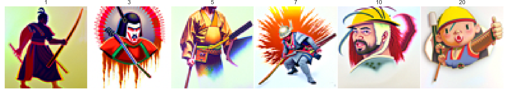
Bob the Builder conditioned on "an oil painting of a samurai"
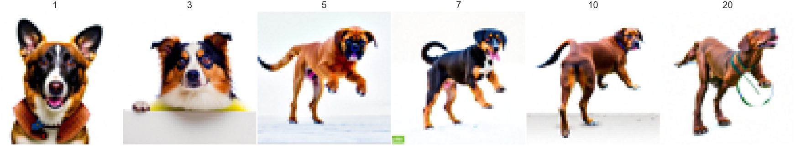
T-Rex conditioned on "a photo of a dog"
Part 1.B - Flip Images / Hydrid Images
Finally, we can do some fun tricks with diffusion. One trick is the flipped image illusion -- we can feed our diffusion loop two prompts, and at each time step of denoising, use prompt 1 to denoise normally and prompt 2 to denoise on the flipped image. Then we flip the flipped noise back and average the two noise estimates together. This generates some interesting results which we show below.
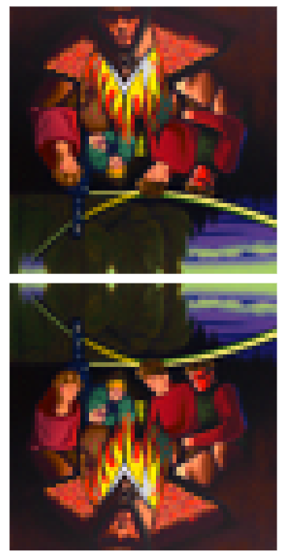
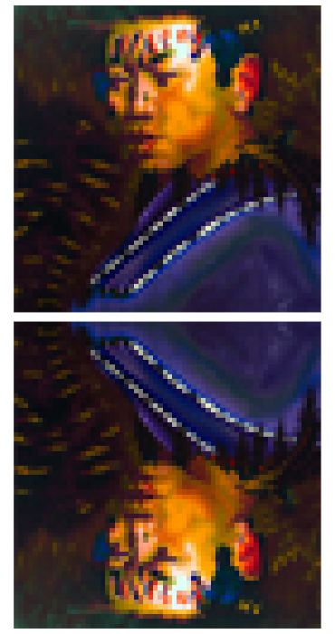
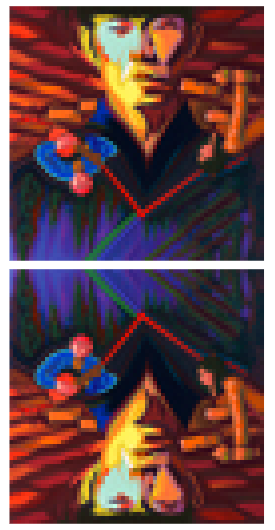
"an oil painting of a samurai" + "an oil painting of people around a campfire"
Another trick is hybrid images, where we similarly use two prompts to create a composite noise estimate. This time, we compute the noise estimates for both prompts, and then compute the overall noise estimate to be lowpass(noise 1) + highpass(noise 2), similar to how we make hybrid images by combining a low-pass version of image 1 and a high-pass version of image 2. Here are some results that we generated:
"an oil painting of a wolf + "an oil painting of a castle"
Part 2.A - Classical UNet -- Noise -> MNIST
In this section, we replicate a simple version of the flow-matching model used in Part 1, training a small model to generate handwritten digits from noise.
Our first iteration of the model is a classical UNet that applies convolutions to an input of pure noise and downsamples it, then applies transpose convolutions and upsamples it such that it should generate a handwritten digit.
We train this model by feeding it noised hand-written digits as input x, with the target output y being the denoised original hand-written digit.
We use noise level 0.5, but our hope is that the model can predict from all levels of noise. Here are some examples of noised digits at different levels (noise goes from 0 to 1).
We train our model for 5 epochs using AdamW optimizer with 1e-4 learning rate and it achieves this training loss curve:
After one epoch of training, we already see pretty decent denoising when we feed it noised digits at noise = 0.5.
And after 5 epochs the performance is quite good, both for training and test images.
Interestingly, while performance decreases when we try to use this model on noised images with noise > 0.5, performance stays around the same for lower noise levels.
Recall that our goal is to diffuse MNIST-like images from pure noise. As an experiment, let's try to train the model using pure noise as input and hand-written digits as labels. Note that the pure noise does not actually correspond to the digit. We will use MSE to train this model.
After one epoch, we already see the model starting to converge to some single point. Below are 16 samples generated from feeding the model pure noise.
And after 5 epochs we see that the model has almost fully converged to always give the same answer. Why does this happen? Since we are using MSE loss, the model learns to predict the point that minimizes the sum of squared distances to all training examples (i.e. the optimum for the MSE optimization problem)! Thus, what we are seeing here can be understood as a kind of average of all the digits in the training set.
Part 2.B - Time-Conditioned UNet = Flow-Matching
Recall that diffusion is essentially taking steps from pure noise to the image manifold. We conceptualize this path through time and seek to calculate the "velocity" of the noise as it iteratively denoises into an image on the image manifold, i.e., at a particular time-step, we have an intermediate image xt, and would like to predict the velocity with our U-Net model (feeding it t and xt).
Additionally, the velocity can be calculated as follows: xt is derived via a linear interpolation between pure noise (x0) and x1 (clean image from our dataset) with the equation (1-t)*x0 + t*x1 -- i.e. if t=0, we get pure noise, and if t=1, we get a clean image, and everything in (0, 1) are our intermediate steps.
Thus the velocity is the derivative of xt with respect to time t, which works out to be x0 - x1. Therefore, we compute the loss on the MSE between (x0 - x1) and our predicted velocity generated by the model given xt and t.
We modify our model to take in as additional input time t, processing it through fully connected blocks and multiplying the outputs on the upsampling portion of the model with them.
Now, instead of predicting a clean image, the model should predict the velocity describing how to move from x0 to x1 (x0 - x1), given xt and t.
Again, we train our model for 10 epochs, this time with lr=1e-2 and exponential scheduling:
To sample from the model, we use the equation x = v*t from physics to iteratively step from pure noise to the image manifold. We take T small timesteps of size (1/T), starting from a noisy image xt (same noise level as x0 initially). At each timestep, we update our intermediate image xt by adding the distance traveled from one timestep (= v*t), with t being (1/T) and our predicted v being model(xt, t).
We can see the denoised images evolving when we sample after the first, fifth, and last epochs. Towards the end, the model generates results that look like hand-drawn symbols and are much less noisy than at the beginning, but we can see that the model is still a bit conufused about what digits should look like.
Part 2.C - Adding Class Conditioning
As we saw from the previous section, the model needs some additional guidance to distinguish between digits, as it's outputting digit-like symbols that don't really match to real numerals.
Let's add class conditioning to our time-conditioned flow matching UNet to see if we can alleviate this issue.
Again, we train for 10 epochs with lr=1e-2 and exponential scheduling.
Finally, we can also get rid of the exponential scheduling and use a lower learning rate (2e-4) to get even better results. Note -- sampled with guidance rate 0.3 instead of 0.5 above.